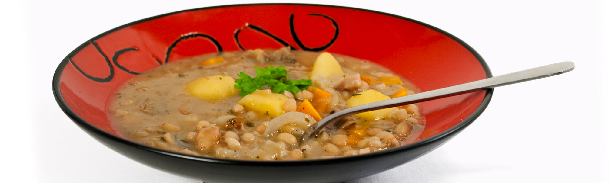
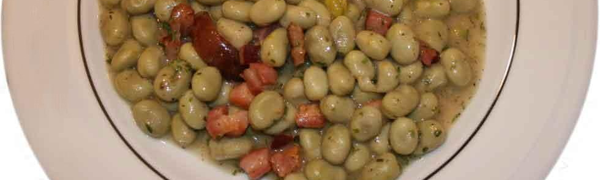
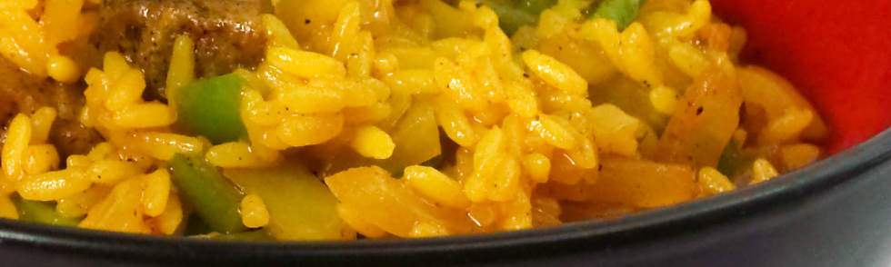
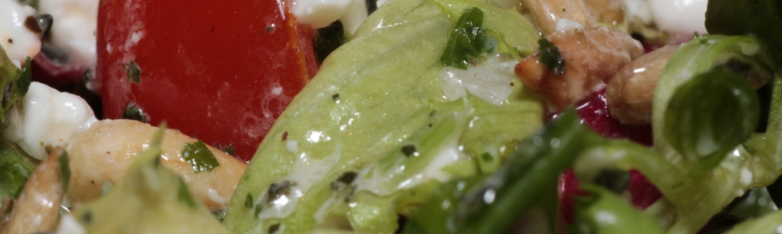
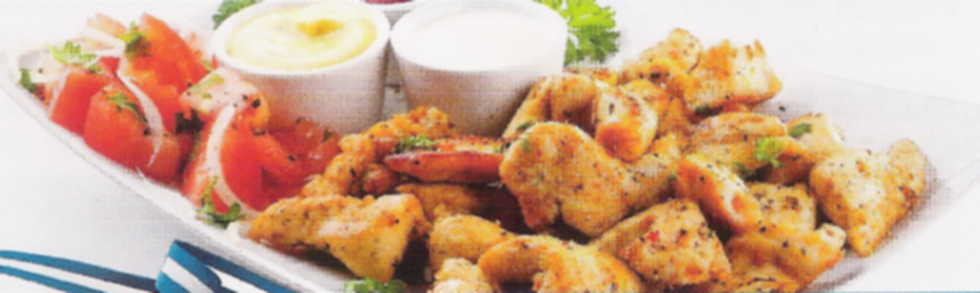
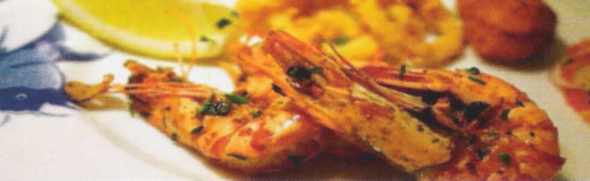
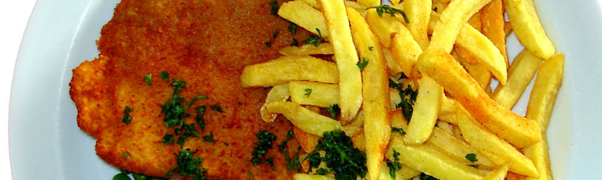
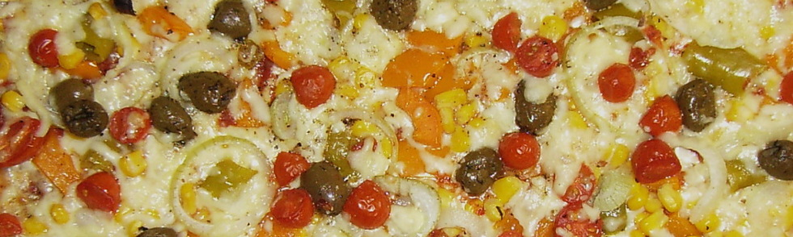
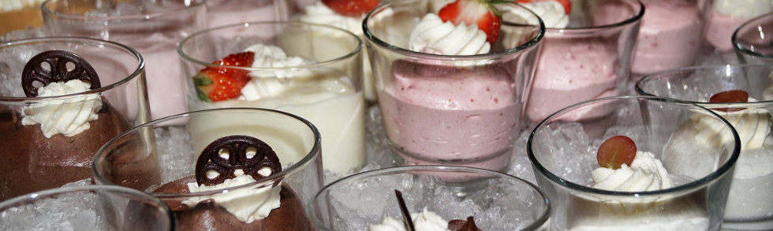

Speisekarte
Suppen

02. Bohnensuppe mit Brot 3,00 €
03. Gulaschsuppe mit Brot 3,00 €
Kalte Vorspeisen
04. Zaziki Joghurt mit Gurken, Knoblauch, Brot 3,00 €
05. Feta Griechischer Schafskäse mit Oliven, Peperoni, Tomaten und Brot 4,50 €
06. Gemischter Teller Schafskäse, Zaziki, Gurken, Oliven, Peperoni, Zwiebeln und Brot 6,50 €
07. Oliven und Peperoni mit Brot 3,00 €
08. Htapodi Octopussalat mit Tomaten, Gurken, Peperoni, Zwiebeln, Oliven und Brot 6,00 €
77. Htipiti Schafskäse, Paprika, Knoblauch und Brot 4,50 €
Warme Vorspeisen

09. Saganaki Gebackener Schafskäse mit Tomaten, Oliven, Peperoni und Brot 4,80 €
10. Gigades Dicke Bohnen mit Brot 4,50 €
11. Melitzanes Auberginen mit Schafskäse und Brot aus dem Backofen 4,50 €
12. Tyropitakia (5 Stück) Schafskäse mit Ei in Blätterteig gewickelt 4,50 €
78. Knoblauchbrot 3,00 €
79. Florinis Rote Paprika gefüllt mit Schafskäse, Knoblauch und Brot 4,50 €
80. Dolmades Weinblätter, gewickelt mit Reis und Brot 4,50 €
81. Feta vom Backofen mit Tomaten, Peperoni, Knoblauch, Chili (scharf) und Brot 5,00 €
Warme Beilagen

13. Reis mit Tomatensoße 2,00 €
14. Pommes Frites 2,00 €
Salate

15. Griechischer Salat Krautsalat, Gruken, Tomaten, Oliven, Peperoni, Zwiebeln, Schafskäse 5,50 €
16. Griechischer Salatteller Grüner Salat, Gurken, Tomaten, Oliven, Peperoni, Zwiebeln, Schafskäse 5,50 €
17. Gemischter Salatteller Krautsalat, grüner Salat, Gurken, Tomaten, Oliven, Peperoni, Zwiebeln, Gouda 5,50 €
84. Chefsalat Grüner Salat, Gurken, Tomaten, Mais, Eier, Thunfisch, Oliven, Peperoni, Soße und Brot 6,50 €
18. Griechischer Bauernsalat klein 3,00 €
19. Krautsalat 2,00 €
20. Tomatensalat 2,00 €
21. Gemischter Salat 2,00 €
Hauptgerichte vom Grill

22. Gyros mit Pommes Frites, Zaziki und gemischtem Salat 9,50 €
23. Gyros Pitta mit Fladenbrot, Zaziki und gemischtem Salat 9,50 €
24. Zwei Suvlaki mit Pommes Frites, Zaziki und gemischtem Salat 9,50 €
25. Zwei Suvlaki mit gerösteten Zwiebeln, Pommes Frites und gemischtem Salat 10,00 €
26. Drei Schweinesteaks mit Kräuterbutter, Pommes Frites und gemischtem Salat 9,00 €
27. Schweinelenden mit Kräuterbutter, Pommes Frites und gemischtem Salat 9,50 €
28. Spezial-Bifteki gefüllt mit Schafskäse, Pommes Frites und gemischten Salat 9,50 €
29. Schweineleber mit gerösteten Zwiebeln, Pommes Frites und gemischtem Salat 9,00 €
30. Fünf Lammkoteletts mit Reis, Zaziki und gemischtem Salat 11,50 €
Hauptgerichte vom Backofen
44. Giuvetsi Kritharaki Lammfleisch, Langkornnudeln, mit Käse überbacken 11,50 €
45. Giuvetsi Spaghetti Lammfleisch, Spaghetti, mit Käse überbacken 11,50 €
46. Giuvetsi Fasolakia Lammfleisch mit grünen Bohnen und Brot 11,50 €
47. Giuvetsi Gigades Lammfleisch mit dicken Bohnen und Brot 11,50 €
48. Stifado Lammfleisch mit Zwiebeln und Brot 11,50 €
49. Giuvetsi Bamies Lammfleisch mit Okraschoten 11,50 €
50. Giuvetsi Melitzanes Lammfleisch mit Auberginen, Schafskäse und Brot 11,50 €
92. Giuvetsi Rizi Lammfleisch mit Reis und Käse überbacken 11,50 €
Grillplatten
31. Athina-Platte Suvlaki, Bifteki, Gyros, Pommes Frites und gemischtem Salat 9,90 €
32. Delphi-Platte Suvlaki, Gyros, Zaziki, Pommes Frites und gemischtem Salat 9,50 €
33. Bauernteller Suvlaki, Lende, Gyros, Zaziki, Pommes Frites und gemischtem Salat 9,50 €
34. Olympia-Platte Gyros, Kalamaria, Zaziki, Pommes Frites und gemischtem Salat 9,90 €
35. Samos-Platte Suvlaki, Kalamaria, Zaziki, Pommes Frites und gemischtem Salat 9,50 €
36. Spezial-Platte Lende, Leber, Bifteki, Gyros, Zaziki, Pommes Frites und gemischtem Salat 12,50 €
37. Flampouresi-Platte Gyros, Suvlaki, Kalamaria, Zaziki, Pommes Frites und gemischtem Salat 11,50 €
85. Hellas-Platte Gyros, Lende, 2 Lammkoteletts, Zaziki, Pommes Frites und gemischtem Salat 11,50 €
86. Meteora-Platte Gyros, Suvlaki, Leber, Zaziki, Pommes Frites und gemischtem Salat 9,50 €
87. Akropolis-Platte Gyros, Steak, Leber, Zaziki, Pommes Frites und gemischtem Salat 9,50 €
88. Trikala-Platte Gyros, Suvlaki, 1 Lammkotelett, Bifteki, Pommes Frites und gemischtem Salat 11,50 €
89. Gyros mit Metaxa-Soße überbacken mit Käse, Pommes Frites und gemischtem Salat 10,50 €
90. Drei Schweinesteaks mit Pfeffersoße, Pommes Frites und gemischtem Salat 9,00 €
Fischgerichte

38. Kalamaria Tintenfisch mit Pommes Frites und gemischtem Salat 9,90 €
39. Glosses Zungenfilet mit Reis und gemischtem Salat 9,50 €
40. Kalamaria - Garides mit Reis und gemischtem Salat 12,50 €
41. Sardelles gebacken, mit Reis und gemischtem Salat 9,00 €
42. Kalamaria - Garides - Glosses mit Reis und gemischtem Salat 16,00 €
43. Garides (Garnelen) mit Reis und gemischtem Salat 15,50 €
91. Kalamaria-Spieß mit Reis und gemischtem Salat 11,50 €
Deutsche Gerichte

51. Schnitzel "Wiener Art" mit Pommes Frites und gemischtem Salat 7,50 €
52. Cordon-Bleu mit Pommes Frites und gemischtem Salat 9,00 €
53. Jägerschnitzel mit Pommes Frites und gemischtem Salat 8,50 €
54. Paprika-Schnitzel mit Pommes Frites und gemischtem Salat 8,50 €
55. Zigeuner-Schnitzel mit Pommes Frites und gemischtem Salat 8,50 €
94. Paradies-Schnitzel mit Pommes Frites und gemischtem Salat 8,50 €
Für unsere kleinen Gäste
69. Gyros mit Zaziki, Pommes Frites und gemischtem Salat 6,50 €
70. Suvlaki mit Pommes Frites und gemischtem Salat 6,00 €
71. Schnitzel mit Pommes Frites und gemischtem Salat 5,00 €
72. Kalamaris mit Pommes Frites und gemischtem Salat 6,50 €
97. Glossa Zungenfilet mit Pommes Frites und gemischtem Salat 6,50 €
Pizza

56. Pizza Spezial mit Vorderschinken, Salami, Champignons, Paprika, Peperoni, Käse 4,00 € / 6,50 €
57. Pizza Spezial mit Zwiebeln 4,00 € / 6,50 €
58. Pizza mit Vorderschinken, Champignons, Zwiebeln, Käse 4,00 € / 6,50 €
59. Pizza Hackfleisch mit Käse 4,00 € / 6,00 €
60. Pizza Hackfleisch mit Champignons, Zwiebeln und Käse 4,00 € / 6,00 €
61. Pizza Salami mit Käse 4,00 € / 6,00 €
62. Pizza mit Vorderschinken und Käse 4,00 € / 6,00 €
63. Pizza mit Vorderschinken, Champignons und Käse 4,00 € / 6,00 €
64. Pizza Vier Jahreszeiten 4,00 € / 6,00 €
65. Pizza Gyros 4,50 € / 7,50 €
66. Pizza Hawaii 4,00 € / 6,50 €
67. Pizza Vegetarisch 4,00 € / 6,50 €
68. Pizza Margherita 3,00 € / 5,00 €
95. Pizza Thunfisch mit Zwiebeln 4,00 € / 6,50 €
96. Pizza Spezial mit Sardinen 4,50 € / 7,50 €
Nachspeisen

73. Gemischtes Eis mit Früchten und Sahne 3,50 €
74. Gemischtes Eis mit Sahne und Schokosoße 3,30 €
75. Gemischtes Eis mit Schokosoße 3,30 €
76. Joghurt mit Honig und Nüssen 3,30 €